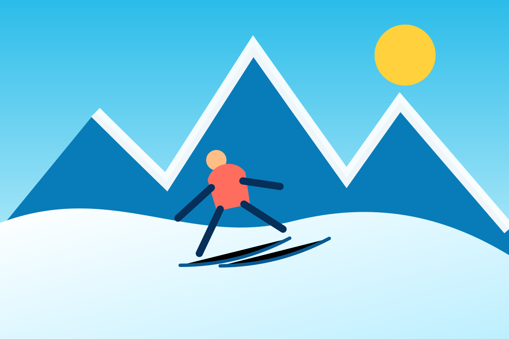

Préparer
Météo, bulletin avalanche, niveau, itinéraire, équipement et solution de repli.
Neige et grands espaces
Depuis Le Plan, La Giettaz ouvre sur le secteur du Torraz et les Portes du Mont-Blanc, avec une ambiance boisée et des vues dégagées.

Portes du Mont-Blanc
Le site officiel présente 89 km de pistes reliées entre Combloux, Megève–Le Jaillet et La Giettaz, auxquels s’ajoutent les 11 km de Cordon, non reliés skis aux pieds.
Hors-piste
Le site officiel décrit La Giettaz comme un secteur plein nord, boisé et recherché pour la poudreuse. En dehors des pistes ouvertes, le terrain n’est pas sécurisé comme une piste balisée.
Une trace existante ne garantit jamais la sécurité d’un passage.
L’ANENA rappelle l’importance du trio DVA–pelle–sonde, de la formation et de l’entraînement. Préparez la sortie avec le bulletin avalanche et faites-vous accompagner lorsque le terrain n’est pas parfaitement maîtrisé.
Votre vidéo hors-piste
Vidéo fournie pour le site. L’ouvrir sur YouTube.
Météo, bulletin avalanche, niveau, itinéraire, équipement et solution de repli.
Vent, visibilité, évolution de la neige, distances et communication du groupe.
Savoir utiliser le DVA, sonder, pelleter et organiser les premières minutes du secours.